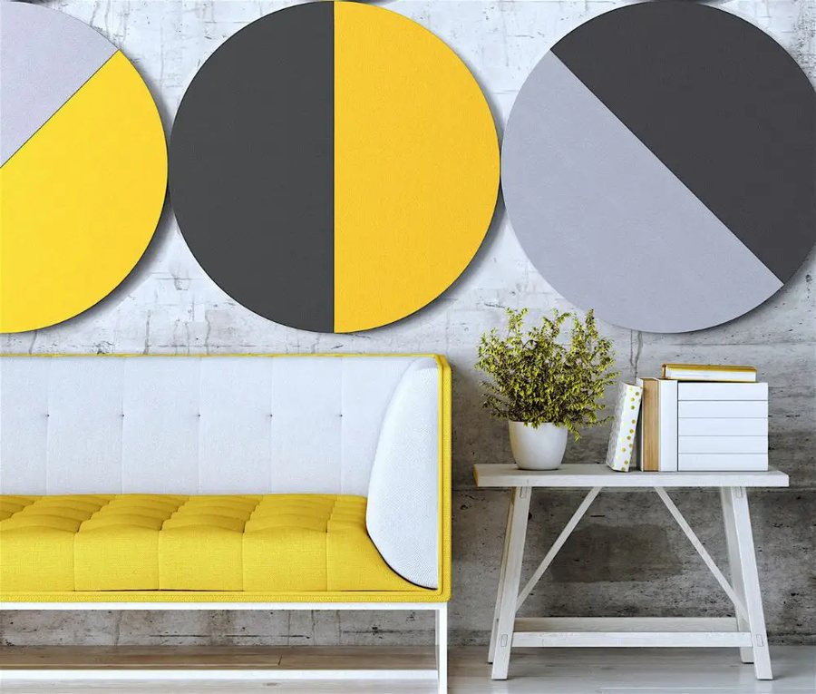
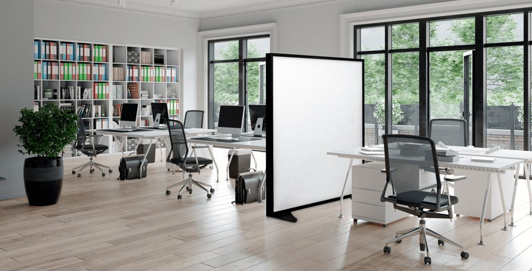
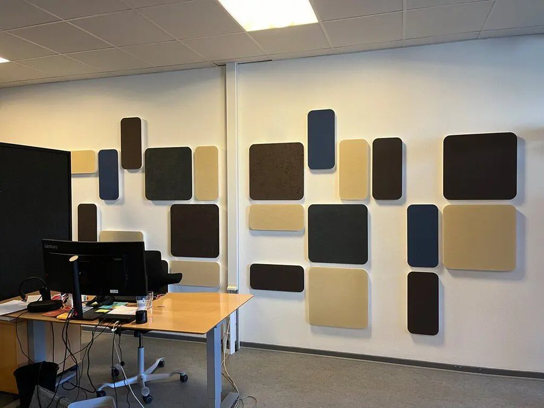
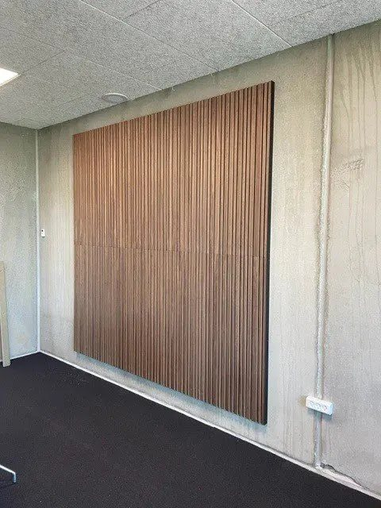
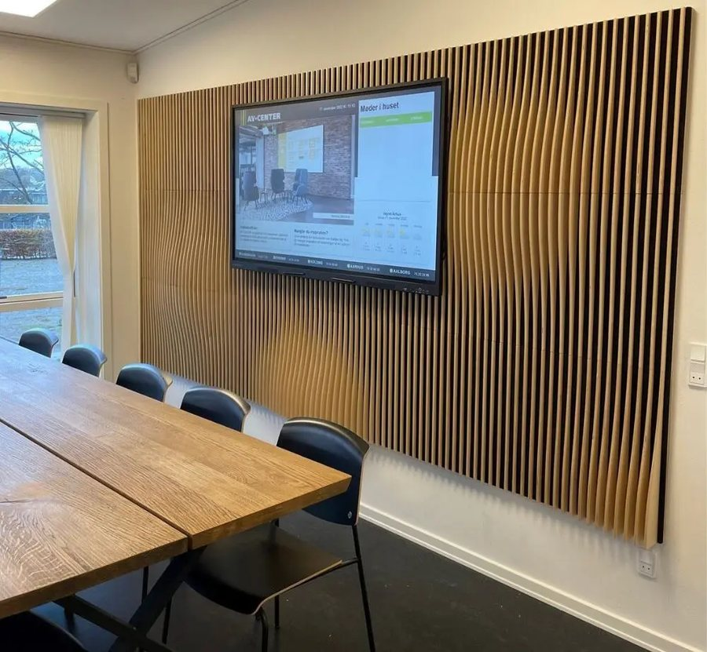
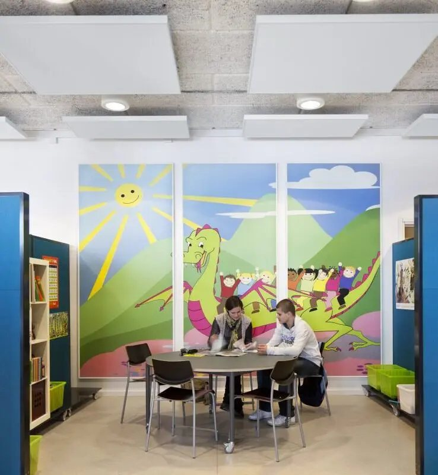

Bedre lydmiljø i kontorer, mødelokaler og åbne kontorlandskaber — akustikpaneler og lyddæmpning, der forbedrer både arbejdsmiljø, effektivitet og sundhed.
Hvorfor akustik betyder noget
Støj og dårlig akustik er ikke bare irriterende — det har en målbar effekt på, hvordan I trives og præsterer på arbejdspladsen. Herunder er tre af de vigtigste konsekvenser, når akustikken ikke er i orden.
Rungende rum og højt lydniveau gør det svært at høre, hvad der bliver sagt. I storrumskontorer og produktionslokaler kan generende støj opleves som en konstant belastning, der går ud over trivslen og øger risikoen for stress.
Forskning viser, at det kan tage helt op til 25 minutter at genfinde koncentrationen, hver gang man bliver forstyrret. Støj er en af de mest almindelige forstyrrelser i både kontor og produktion — med dalende produktivitet til følge.
Ud over stress kan vedvarende støjbelastning give helbredsmæssige konsekvenser som forhøjet blodtryk og hjertekarsygdomme. Ved vedvarende støj omkring 85 dB(A) og derover er der desuden risiko for egentlige høreskader.
Kilde: Dansk Industri – "Du mister 25 minutter hver gang, du bliver forstyrret i dit arbejde"
Eksempler
God akustik behøver ikke gå på kompromis med indretningen. Her er nogle eksempler på løsninger, der både dæmper lyden og styrker rummets udtryk.

Runde designpaneler er akustikregulering, der samtidig fungerer som et dekorativt blikfang i reception, lounge og fællesarealer.

Mobile skærmvægge skaber akustisk afgrænsede zoner i storrumskontorer og åbne miljøer — uden behov for permanent ombygning.

Akustikpaneler i forskellige farver og formater, sat op som et grafisk vægudtryk, kombinerer lyddæmpning med visuel identitet på kontoret.

Trælistepaneler på hårde, reflekterende vægge som beton er en effektiv løsning, hvor rummet ellers ville have rungende akustik.

Akustiske trælister med indbygget skærmløsning reducerer efterklang markant i mødelokaler og giver samtidig et markant, arkitektonisk udtryk.

Farvede akustikpaneler i loft og på væg dæmper efterklang og støjniveau, samtidig med at de bliver en del af rummets indretning — oplagt i skoler, biblioteker og børnevenlige miljøer.
Vores specialer
Vi måler efterklangstid og støjniveau og rådgiver om den rigtige løsning til jeres rum og arbejdsopgaver.
Lydabsorberende panelplader i mange farver, materialer og formater — fra diskrete løsninger til grafiske vægudtryk.
Akustiklofter og hængende paneler, der reducerer efterklang effektivt i store og høje rum.
Mobile og faste skærmvægge, der skaber akustisk afgrænsede zoner uden ombygning.
Akustikløsninger tilpasset jeres indretning, farver og brand — funktion behøver ikke gå på kompromis med udseende.
Vi installerer og servicerer akustikløsninger i hele Grønland.
Kontakt os for en gratis behovsanalyse og tilbud — vi rådgiver om alle løsninger.
Kontakt
Ring, skriv eller kig forbi vores showroom i Qinngorput — vi vender hurtigt tilbage.